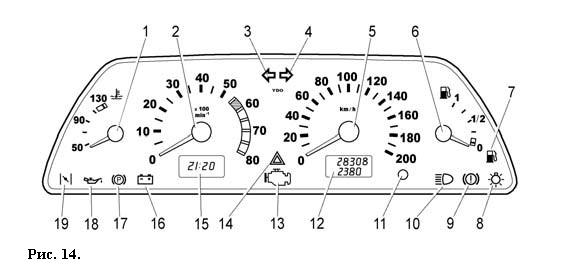

ОПИСАНИЕ АВТОМОБИЛЯ
Комбинация приборов
Комбинация приборов показана на рисунке 14, где:
1 – указатель температуры охлаждающей жидкости.
Переход стрелки в красную зону шкалы указывает на перегрев двигателя.
ВНИМАНИЕ!
Запрещается эксплуатация автомобиля с перегретым двигателем, когда стрелка указателя находится в красной зоне.
Автомобиль должен быть доставлен на аттестованное ПССС для определения и устранения причины перегрева двигателя.
2 – тахометр.
Указывает частоту вращения коленчатого вала двигателя.
Зона шкалы с красной штриховкой обозначает режим работы двигателя с высокой частотой вращения коленчатого вала,
красная зона шкалы – опасные для двигателя режимы.
ВНИМАНИЕ!
Не допускайте работу двигателя в красной зоне, а также работу двигателя с частотой менее 800 мин-1 при трогании и движении.
3 – контрольная лампа включения указателей поворота по левому борту.
Загорается зеленым мигающим светом при включении левого поворота.
4 – контрольная лампа включения указателей поворота по правому борту.
Загорается зеленым мигающим светом при включении правого поворота.
5 – спидометр.
6 – указатель уровня топлива.
7 – контрольная лампа резерва топлива.
Загорается оранжевым светом, если в топливном баке осталось менее 4 – 6,5 л.
ВНИМАНИЕ!
Никогда не допускайте полной выработки топлива.
Это увеличивает износ узлов топливной системы и может привести к аварийной ситуации на дороге из-за неожиданной остановки Вашего автомобиля,
а также к перегреву и повреждению нейтрализатора.
8 – контрольная лампа включения габаритного света.
Загорается зеленым светом при включении наружного освещения.
9 – контрольная лампа аварийного состояния рабочей тормозной системы.
Загорается красным светом при понижении уровня жидкости в бачке гидропривода тормозов ниже метки «MIN».
ВНИМАНИЕ!
При загорании контрольной лампы движение запрещено до устранения причин снижения уровня жидкости.
10 – контрольная лампа включения дальнего света фар.
Загорается синим светом при включении дальнего света фар.
11 – кнопка сброса показаний.
12 – индикатор пробега.
Верхняя строка индикатора индицирует суммарный пробег автомобиля,
а нижняя – является суточным счетчиком пройденного пути.
Сброс показаний суточного счетчика проводите удержанием кнопки 11 в нажатом положении более 5 с на остановленном автомобиле.
Обнуление показаний суточного счетчика происходит так же и при снятии клеммы с аккумуляторной батареи.
13 – контрольная лампа «проверьте двигатель».
Лампа загорается при включении зажигания и гаснет после запуска двигателя, если отсутствуют неисправности в системе управления двигателем.
В случае обнаружения какого-либо дефекта в системе лампа горит постоянно или мигает.
14 – контрольная лампа включения аварийной сигнализации.
Загорается красным мигающим светом при включении аварийной сигнализации.
15 – индикатор часов, температуры и напряжения бортовой сети.
Переключение между индикацией времени, индикацией температуры окружающего воздуха и индикацией напряжения бортовой сети осуществляется кратковре- менным нажатием на кнопку 11.
При включении зажигания при температуре окружающего воздуха выше +20С всегда появляется индикация часов.
При понижении температуры окружающей среды ниже +20С индикатор в течение 3 с высвечивает показания часов, а затем переходит на индикацию температуры, показание которого первые 10 с происходит в мигающем режиме.
При повышении температуры наружного воздуха выше +30С и повторном ее снижении до + 20С:
– в случае индикации часов индикатор автоматически переключается на индикацию температуры, показания которого первые 10 с высвечиваются в мигающем режиме;
– в случае индикации температуры ее обычный режим прерывается десятисекундным мигающим режимом.
Установка часов и минут производится в режиме индикации времени путем вращения кнопки 11 всторону знаков «h» – часы и «m»– минуты.сторону знаков «h» – часы и «m»– минуты.
После снятия клеммы с аккумуляторной батареи и последующего восстановления напряжения отсчет времени производится от нулевого значения.
16 – контрольная лампа заряда аккумуляторной батареи.
Загорается красным светом при включении зажигания и гаснет после пуска двигателя.
Яркое загорание лампы или ее свечение в полнакала при работающем двигателе указывает на слабое натяжение (обрыв) ремня привода генератора или на неисправность в цепи заряда, а возможно самого генератора.
17 – контрольная лампа включения стояночного тормоза.
Загорается красным светом при включении стояночного тормоза.
18 – контрольная лампа недостаточного давления масла.
Загорается красным светом при включении зажигания и гаснет после пуска двигателя.
При работающем двигателе загорается красным светом, если давление в системе смазки двигателя недостаточное.
ВНИМАНИЕ!
В случае загорания сигнализатора аварийного давления масла, немедленно прекратите движение, заглушите двигатель и обратитесь на аттестованное ПССС для устранения неисправности, т.к. недостаточное давление в системе смазки приведет к тяжелым повреждениям двигателя.
19 – резерв.